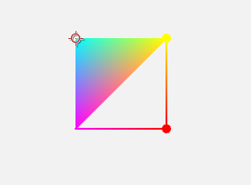
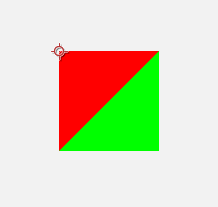

Creation origin: Poly function
poly(obj) analyzes the input Obj, then draws it to scene.
Usage
If you are familiar with
Houdini, the idea of construct anobjis basically to fill a SpreadSheet.
Here is an example of constructing an obj of an unusual colorful triangle.

PolyTest1.lua
version3()
background(0.95)
move(width/2,height/2)
dim3()
dotRadius(5)
obj={
point={
{p={0,0,0},color={0,1,1}},
{p={100,0,0},color={1,1,0}},
{p={0,100,0},color={1,0,1}},
{p={100,100,0},color={1,0,0}},
},
prim={
{type="triangle",pref={1,2,3}},
{type="line",pref={2,3,3,4,4,2}},
{type="point",pref={2,4}},
}
}
poly(obj)
Supporting primitives
Assumepref={1,2,3,4,5,6}.
prefmeanspoint reference.- The semicolon (
;) is the end mark of one primitive drawing.
| type name | Corresponding primitive | Drawing order | full type name |
|---|---|---|---|
| points | Points | 1;2;3;4;5;6; |
points |
| pointd | 2d point | 1;2;3;4;5;6; |
point disc |
| pointb | 3d point | 1;2;3;4;5;6; |
point ball |
| line | Single line | 123456; |
single line |
| linef | Single 2d line | 123456; |
line flat |
| linec | Single 3d line | 123456; |
line capsule |
| linel | Loop line | 1234561; |
line loop |
| linelf | Loop 2d line | 1234561; |
line loop flat |
| linelc | Loop 3d line | 1234561; |
line loop capsule |
| lines | Lines | 12;34;56; |
lines |
| linesf | 2d lines | 12;34;56; |
lines flat |
| linesc | 3d lines | 12;34;56; |
lines capsule |
| triangles | Triangle meshes | 123;456; |
triangles |
| triangleb | Bridge structure triangle meshes | 123;324;345;546; |
triangle bridge |
| triangler | Radial structure triangle meshes | 123;134;145;156; |
triangle radial |
The structure of obj
The obj struction is defined by following steps:
objis a table.objcontains 4 keys:point,vertex,prim,detail.- The 4 keys in
objhave their own value calledpointArray,vertexArray,primArray,detailList. pointArrayis required.vertexArrayis optional.primArrayis required.detailListis optional.- The above-mentioned value names that are
Arraysuffixed holds N sub-tables, where N can be defined by users. - The kth sub-table of
pointArrayis calledpoint[k]or"The kth point". - The kth sub-table of
vertexArrayis calledvertex[k]or"The kth child-point". - The kth sub-table of
primArrayis calledprim[k]or"The kth primitive". - The
detailListandPoints, child-points, primitives, has some unsubdividable units：the Key-value pairs. We call these keysK, and valuesV. Kshould only contains alphabets, numbers and underlines. AndKshouldn't be all numbers.Vhas 7 types:1D,2D,3D,4D, string,texture idandindex serial.- For all double floating numbers
x,y,z,w xor{x}is1D V.{x,y}is2D V.{x,y,z}is3D V.{x,y,z,w}is4D V."Hello! PixelsWorld!"isstring V.- When (
Kends up with"_tex") and (Vis integer and the corresponding texture exists), it istexture id V. - For integer serial
a1,...,an,{a1,a2,a3,...,an}isindex serial V. - For all
point[k], there must be aKnamed"p"to represents the location, or it is a invalid point. - For all
vertex[k], there must be aKnamed"pref"and itsVis integer to represent the reference point id, or it is an invalid child-point. - For all
prim[k], there must be aKnamed"type"and itsVisstringto represents the type of the primitive. And there also must be aKnamed"vref"or"pref"and itsVisindex serialto represent the order of points drawing.
Override priority
For same K, the following override priority is defined:
Same with
Houdini.
- vertex
- point
- prim
- detail
Example:
The following obj's prim contains color attribute (Red), So we will get a red triangle.

PrimColor.lua
version3()
background(0.95)
move(width/2,height/2)
dim3()
obj={
point={
{p={0,0,0}},
{p={100,0,0}},
{p={0,100,0}},
},
prim={
{type="triangle",pref={1,2,3},color={1,0,0}},
},
}
poly(obj)
This time, both prim and point contains color, and because the priority of point is higher, so the color attribute in pointwill be used, then we will get a colorful triangle.

PointColor.lua
version3()
background(0.95)
move(width/2,height/2)
dim3()
obj={
point={
{p={0,0,0},color={0,1,1}},
{p={100,0,0},color={1,1,0}},
{p={0,100,0},color={1,0,1}},
},
prim={
{type="triangle",pref={1,2,3},color={1,0,0}},
},
}
poly(obj)
Usage of vertex
Vertex (child-point) inherits all attributes in point.

VertexColor.lua
version3()
background(0.95)
move(width/2,height/2)
dim3()
obj={
point={
{p={0,0,0}},
{p={100,0,0}},
{p={0,100,0}},
{p={100,100,0}},
},
vertex={
{pref=1,color={1,0,0}},
{pref=2,color={1,0,0}},
{pref=3,color={1,0,0}},
{pref=2,color={0,1,0}},
{pref=3,color={0,1,0}},
{pref=4,color={0,1,0}},
},
prim={
{type="triangle",vref={1,2,3,4,5,6}},
},
}
poly(obj)
prefis used to defined which point to be referenced, the full name ofprefisPoint reference.- So the
vrefmeansVertex reference.- Note: The index in Lua starts from 1 not 0.
Without vertex, the triangle looks like this:

NoVertex.lua
version3()
background(0.95)
move(width/2,height/2)
dim3()
obj={
point={
{p={0,0,0},color={1,0,0}},
{p={100,0,0},color={1,0,0}},
{p={0,100,0},color={1,0,0}},
{p={100,100,0},color={0,1,0}},
},
prim={
{type="triangle",pref={1,2,3,2,3,4}},
},
}
poly(obj)
Extra shader
Yes! You can even write shader in an obj.

FragColor.lua
version3()
background(0.95)
move(width/2,height/2)
dim3()
obj={
point={
{p={0,0,0},myattribute={1,0}},
{p={100,0,0},myattribute={0,1}},
{p={0,100,0},myattribute={0,0}},
{p={100,100,0},myattribute={1,1}},
},
prim={
{
type="triangle",
pref={1,2,3,2,3,4},
frag=[==[
#define t ]==] .. tostring(time) .. [==[
void main(){
outColor = vec4(mod(myattribute*10+vec2(t),1),0,1);
}
]==],
},
},
}
poly(obj)
Use UV texture
- Here is an example of how to use uv texture.
- The integer that its key name ends up with
_texis treated as a texture id.- Using an extra shader in a prim can handle more than one textures.
UVTex.lua
version3()
background(0.95)
move(width/2,height/2)
dim3()
obj={
point={
{p={0,0,0},uv={0,0}},
{p={100,0,0},uv={1,0}},
{p={0,100,0},uv={0,1}},
{p={100,100,0},uv={1,1}},
},
prim={
{
type="triangler",
pref={1,2,4,3},
my_tex=INPUT,
},
},
}
poly(obj)